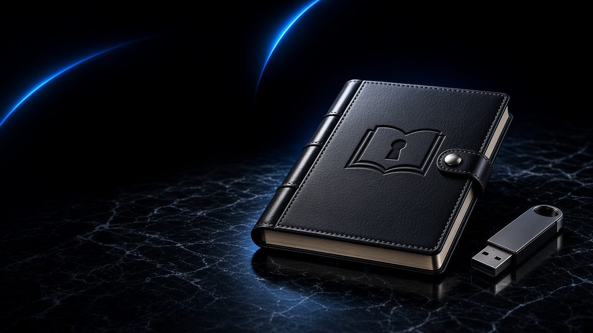
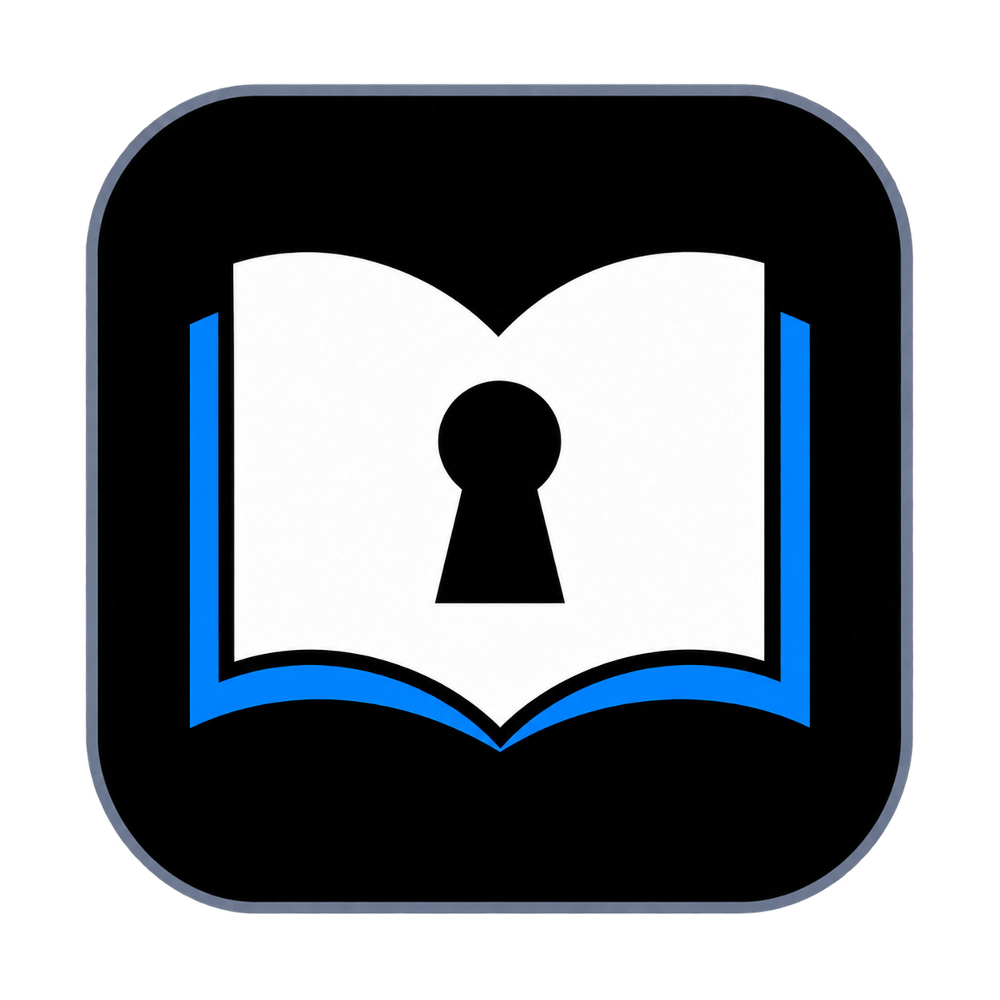

Get the app
Buy with $XRP through Xaman. The purchase is separate from your offline vault.

Bring your own USB

BLΛCKBOOKThe recovery notebook, reimagined for Windows. A familiar place for wallet details, account records, and the notes you can’t afford to lose.
Windows app · Offline vault · Built for USB portability
Designed around the pages of a recovery notebook, with simple controls and room to keep related information together.
Interactive layout preview. Tap a category to explore. This page never accepts or stores recovery information.
Buy with $XRP through Xaman. The purchase is separate from your offline vault.
The Windows app uses both a master password and a separate encryption key to unlock your local vault.
Keep a separate backup of your encrypted vault and a safe copy of your encryption key. You need both your master password and encryption key to unlock the vault; a website or wallet connection cannot unlock it.
Release checks, recovery behavior, and Windows/USB testing must pass before release. This page shows an illustrative interface with dummy data, not a working vault.
Buy with Xaman and download BLΛCKBOOK for Windows right away. Your vault password, encryption key, and recovery information will never belong on this page.
$49 $29 launch price · first 100 buyers · save $20
Only to buy. Purchases use $XRP through Xaman. No wallet connection is required to unlock the offline vault: that uses your master password and separate encryption key.
Yes. BLΛCKBOOK is built to run from your own USB drive on Windows. Your vault lives in a BLACKBOOK-DATA folder on that drive, separate from the app.
The vault requires both your master password and separate encryption key. There is no password-reset back door. Losing either can mean losing access, even if you still have a vault backup.
Never enter recovery information on this website, which shows sample records only. Use the BLΛCKBOOK app on a trusted Windows PC. Encryption cannot protect an unlocked vault from malware already on the computer.